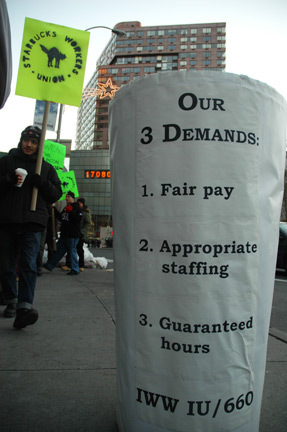
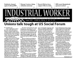

Submitted on Mon, 08/20/2007 - 3:28am
By Diane Krauthamer
Despite Starbucks’ international union-busting attempts, workers and their supporters are telling the company that they are not backing down. Increased organizing and support is growing like wildfire throughout Europe and the U.S., and this past weekend proved once again that the struggle is far from over.
On August 18, 2007, the Industrial Workers of the World (IWW) and No Sweat held a successful National Day of Action against Starbucks, with demonstrations in ten cities across the UK, including Glasgow, Leeds, Edinburgh, Leicester and London.
Although the company has more than 500 stores with over 5,000 workers and continues to expand in the UK, management is growing nervous as negative publicity surrounding their unfair labor practices increases regionally.
In London, small groups spent the morning distributing informational leaflets to baristas at both Starbucks and Caffé Nero, another major UK coffee chain with working conditions that parallel those of Starbucks. Starbucks baristas are paid just above the minimum wage and are subject to excessive working hours and unpaid overtime. Additionally, baristas must work at a relentless pace, resulting in repetitive strain injuries.
By 2 PM, the groups convened in front of the New Oxford Street Starbucks, a busy shopping district in the central city. More than 30 people spent the windy Saturday afternoon protesting and distributing information to customers, workers and onlookers. In addition to the dozens of protesters, undercover police officers and regional management also made a presence at the event. Two police officers were spotted across the street from the demo, illegally taking photos of individuals from the IWW and No Sweat.
One of the managers, wearing a beige sweater as a feeble attempt to conceal his company t-shirt, sat inside the store “reading a newspaper” while keeping the protest under surveillance. When I asked him if he was there to protest, he said he just wanted to make sure that nothing would “get out of hand.” He admitted that the company had already known about the protest beforehand, despite the fact that the protest location was only communicated over email, and not made public.
The manager asked if we were planning any other demonstrations, and when everyone packed up to go home, he followed the group down the street.
As Starbucks' headquarters in Seattle is advising regional management in the UK to embark on campaigns of surveillance and intimidation—as they have done in the U.S., France and Germany—workers are not backing down. Many baristas showed interest in joining the union, and many potential customers turned away from the store when they received information about the company’s practices. Continued harassment is evidence that the company who sets the world's coffee industry standard feels threatened by the power of radical unionizing and solidarity that continues to expand across international borders
Submitted on Fri, 08/17/2007 - 4:43am

What can you do to help?
(1) Join our daily pickets from 12-5:00pm in front of Metro Lighting at 2121 San Pablo in Berkeley;
(2) Donate to our strike fund, make checks payable to the IWW with "metro lock-out fund" in the memo (send them to IWW PO Box 11412 Berkeley, CA 94712 or bring them to the picket line);
(3) Forward this message to your friends, family and fellow workers;
(4) Contact the owners (Lawrence and Christa) of Metro Lighting and let them know that you support the workers and will be taking your business elsewhere. (phone: 1-888-METRO20 )
Employees at Metro Lighting believe that a caustic alkaline chemical was released into their work area as a result of unsafe disposal on Thursday, August 9, 2007. These caustic alkaline chemicals can cause pneumonia and blindness.
Submitted on Fri, 08/17/2007 - 4:30am
Disclaimer - The opinions of the author do not necessarily match those of the IWW. The image pictured to the right did not appear in the original article, we have added it here to provide a visual perspective. This article is reposted in accordance to Fair Use guidelines.
 At the Labor Board trial of the company, twentysomething activists try to poke holes in the company's socially responsible image
By Moira Herbst - Business Week, August 17, 2007
In a spare office-like courtroom in midtown Manhattan, former Starbucks (SBUX) barista and Bronx native Joe Agins Jr. sits on the witness stand with eyes wide open. Dressed in an oversized T-shirt and sporting a goatee, he looks younger than his 24 years. Several times, he asks the judge for time to calm his nerves and gain his composure. Agins is describing a day in 2006, after he'd become an outspoken member of the Industrial Workers of the World (IWW) union, when he was introduced to the company's New York metro regional vice-president, who asked him if he liked working at Starbucks. "I felt closed in and trapped by management, and like I was under pressure," he says.
Submitted on Fri, 08/17/2007 - 4:20am

Dear Friends,
A dozen years ago I was diagnosed with Congestive Heart Failure. At that time I was finding it increasingly difficult to follow my trade. I stopped touring and pretty well assumed that my performing life was over. It was a very difficult time, but we(Joanna and I)with the help of friends throughout the music world kept the ship afloat. Your help was the ark that bouyed us over those hard times. I created "Loafer's Glory-Hobo Jungle of the Mind", a syndicated radio show to make a living in one place. But the underwriting didn't materialize and so I found it necessary to go back to the stage, although in a more limited way. Fortunately through proper medication, particularly cordorone, exercise, yoga, diet and a 3-day-a week cardiac rehab class at the local hospital, I had become stronger, lighter, and more confident of my ability to travel and work. So, I suspended the radio show and all fund raising on our behalf and with the help of Jim Fleming and friends a nd comrades at Fl eming Artists, and of course the folk music community, I went back to work.
Submitted on Thu, 08/16/2007 - 1:12am
Headlines:
- Unions talk tough at US Social Forum
- Canyon Ranch resort takes staff tips
- Save Crichton Campus campaign needs support
- Boycott Molson Beer during strike
Featured Articles:
- Online Picket Line: Bosses counter online campaigns
- Chicago Couriers Union: a lesson for IWW solidarity union organizers
- IWW meets with the Bangladeshi National Garment Workers Federation
Download a free PDF copy of this issue.